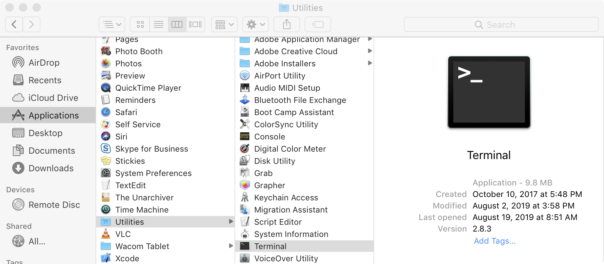

Chapter 2 Logging In
This book assumes that you have access to an account on a Unix-like operating system (such as Linux) that you can use directly or log in to remotely via the SSH (Secure-SHell) login protocol. Accounts of this type are frequently available at universities and research institutions, though you may also consider using or installing Linux on your own hardware. Additionally, the CyVerse Collaborative provides free command-line access to biological researchers through their Atmosphere system; see the end of this chapter for information on how to access this system using your web browser.
Before explaining anything in detail, let’s cover the actual process of logging in to a remote computer via SSH. To do this, you will need four things:
- Client software on your own computer.
- The address of the remote computer, called its “host name,” or, alternatively, its IP (Internet protocol) address.
- A username on the remote computer with which to log in.
- A corresponding password on the remote machine with which to log in.
If you are using a computer running Mac OS X, the client software will be command line oriented and is accessible from the Terminal utility. The Terminal is located in the Utilities folder, inside of the Applications folder.2

In the window that opens up, you will see a prompt for entering commands. On my computer it looks like this (except for the lines numbers along the left):
[oneils@mbp ~]$
At this prompt, enter the following: ssh <username>@<hostname or ip>. Note that you don’t actually type the angle brackets; angle brackets are just some commonly used nomenclature to indicate a field you need to specify. To log in to my account with username oneils at the Oregon State University’s main Linux computer (shell.onid.oregonstate.edu), for example, I would type:
[oneils@mbp ~]$ ssh oneils@shell.onid.oregonstate.edu
To log in to a CyVerse instance with IP address 128.196.64.193 (and username oneils), however, I would use:
[oneils@mbp ~]$ ssh oneils@128.196.64.193
After pressing Enter to run the command, you may be asked to “verify the key fingerprint” of the remote computer. Each computer running the SSH login system uses a unique pair of “keys” for cryptographic purposes: the public key is accessible to the world, and only the remote computer knows the private key. Messages encrypted with the public key can only be decrypted with the private key—if you cared to verify with the owner of the remote computer that the public key “fingerprint” was correct, then you could be assured that no one between you and the correct remote computer could see your login session. Unless you have a reason to suspect espionage of some sort, it’s usually safe to enter yes at this prompt. Normally, you will be prompted once for each fingerprint, unless your local computer forgets the fingerprint or the system administrator changes it (or there is indeed an espionage attempt!).
In any case, you will next be asked to enter your password. Note that as you type the password, you won’t see any characters being shown on the screen. This is another security feature, so that no passersby can see the contents or even the length of your password. It does make password entry more difficult, however, so take care when entering it. After logging in to a remote computer, the command prompt will usually change to reflect the login:
[oneils@mbp ~]$
If you are running Microsoft Windows, you will need to download the client SSH software from the web, install it, and run it. One option is PuTTy.exe, which is available at http://www.chiark.greenend.org.uk/~sgtatham/putty/download.html.
Once downloaded, it will need to be installed and run. In the Host Name (or IP address) field, enter the host name or IP address, as discussed above. Leave the port number to the default of 22, and click Open.

If you have successfully entered the host name or IP, you will be prompted for your username and password (and potentially to verify the key fingerprint).
Finally, if you are already running a Linux or other Unix-like operating system, the steps for logging in remotely via SSH will be similar to those for Mac OS X, though you’ll need to find the Terminal utility on your own. If you are using CyVerse Atmosphere, then you can utilize a terminal window right in the web browser by clicking on the Access By Shell tab or Open Web Shell link. In all cases, the text-based interface will be identical, because the remote computer, rather than your local desktop, determines the display.
Logging in Further, Changing Your Password
Depending on where you are logging in to, you may not be done with the login process. At many universities and research centers, the administrator would prefer that you not do any work on the computer you initially logged in to, because that computer may be reserved just for initial logins by dozens or even hundreds of researchers. As a result, you may need to “check out” a secondary, internal computer for your actual computational needs. Sometimes this can be done by SSHing on the command line to the secondary computer, but at some institutions, you will be asked to run other commands for this checkout process. Check with your local system administrator.
In addition, you may want to change your password after your initial login. Running the passwd command usually suffices, and you will be prompted to enter both your old and new passwords. As usual, for security reasons, no characters will appear when entered. Further, good system administrators never ask for your password, and they are unable to recover it if it gets lost. The best administrators can do is reset it to a temporary one.
SSH: Secure Shell
One might rightfully ask: what did we just accomplish with all of this logging in? On our desktop computer, we used a program called a client to connect to another program, called a server. A server is a program that waits in the background for another program (a client) to connect to it.3 This connection often happens over a network, but connections can occur between programs on the same computer as well. A client is a program that is generally run by a user on an as-needed basis, and it connects to a server. While it’s more correct to define a server as a program that waits for a connection from a client, colloquially, computers that primarily run server programs are also referred to as servers.

The SSH server and the SSH client communicate using what is known as the SSH “protocol,” simply an agreed-upon format for data transfer. The SSH protocol is quite lightweight: because all of the actual computation happens on the remote machine, the only information that needs to be transferred to the server are the keystrokes typed by the user, and the only information that needs to be transferred to the client are the characters to be displayed to the user. As its name implies, the SSH protocol is very secure owing to its reliance on advanced public-key cryptography.4
The SSH server may not be the only server program running on the remote computer. For example, web servers allow remote computers to serve web pages to clients (like Mozilla Firefox and OS X’s Safari) using HTTP (hypertext transfer protocol). But because there is only one host name or IP address associated with the remote computer, an extra bit (byte, actually) of information is required, known as the “port number.” By way of analogy, if the remote computer were an apartment building, port numbers would be apartment numbers. By convention, SSH connects on port 22 and HTTP connects on port 80, although these ports can be changed by administrators who wish to run their services in nonstandard ways. This explains why port 22 is specified when connecting via Putty (and is the default when using command-line ssh, but it can be adjusted with a parameter).

Other protocols of note include FTP (file transfer protocol) and its secure version, SFTP (secure file transfer protocol), designed specifically for transferring files.
Command-Line Access with CyVerse Atmosphere
Readers of this book will ideally have access to a Unix-based operating system (e.g., Linux) with command-line access. This is often the case for individuals at universities and other research or educational institutions. Many users have access to such systems but don’t even realize it, as the service is not often widely advertised.
For those without institutional access, there are a few alternatives. First, Mac OS X machines are themselves Unix-based and come with a command-line interface (via the Terminal application), though the command-line tools differ vary slightly from the GNU-based tools found on most Linux distributions. A web search for “OS-X GNU core utils” will turn up some instructions for remedying this discrepancy. Second, it is possible to install a Linux distribution (like Ubuntu Linux) on most desktops and laptops by configuring the computer to “dual boot” Linux and the primary operating system. Alternatively, Linux distributions can be installed within “virtual machine” software, like VirtualBox (http://virtualbox.org).
A rather exciting, relatively recent addition to these options is the Atmosphere system, run by the CyVerse (previously iPlant) collaborative, a cyber-infrastructure project founded in 2008 to support the computational needs of researchers in the life sciences. CyVerse as a whole hosts a variety of projects, from educational resources to guided bioinformatics analyses. The Atmosphere system is the most relevant for us here, as it provides cloud-based access to systems running Linux. To get started using one of these systems, navigate to http://cyverse.org/atmosphere and click on the link for “Create an Account” or “Launch Atmosphere.” If you need to create a new account, do so—CyVerse requests a variety of information for account creation to help gauge user interest and garner funding support. You may also need to request special access to the Atmosphere system through your account on the Atmosphere homepage, as Atmosphere is more resource intensive than other tools provided by CyVerse.

After clicking on the “Launch” link, you will have the opportunity to enter your username and password (if you have been granted one).
The Atmosphere system works by divvying up clusters of physical computers (located at one of various providers around the country) into user-accessible virtual machines of various sizes. When performing a computation that requires many CPU cores, for example, one might wish to access a new “instance” with 16 CPUs, 64 gigabytes (GB) of RAM, and 800 GB of hard disk space. On the other hand, for learning purposes, you will likely only need a small instance with 1 CPU and 4 GB of RAM. This is an important consideration, as CyVerse limits users to a certain quota of resources. Users are limited by the number of “atmosphere units” (AUs) they can use per month, defined roughly as using a single CPU for an hour. Users are also limited in the total number of CPUs and total amount of RAM they can use simultaneously.
After determining the instance size needed, one needs to determine which operating system “image” should be loaded onto the virtual machine. All users can create such images—some users create images with software preinstalled to analyze RNA sequencing data, perform de novo genome assembly, and so on. We’ve created an image specifically to accompany this book: it is fairly simple and includes NCBI Blast+ (the most modern version of BLAST produced by the National Center for Biotechnology Information), R, Python, git, and a few other tools. It is called “APCB Image.”
To activate a new instance with this image, click on the “New -> Instance” button in the Atmosphere interface. You may first need to create a “Project” for the instance to live in. You can search for “APCB Image” in the search box of instance types. Here’s the view of my APCB project after creating and starting the instance:

After creating the instance, it may be in one of several states; usually it will be either “running” (i.e., available for login and consuming resources) or “suspended” (effectively paused and not consuming resources). The interface for a given instance has buttons for suspending or resuming a suspended instance, as well as buttons for “Stop” (shutting an instance down), “Reboot” (rebooting the instance), and “Delete” (removing the instance and all data stored in it).

Once an instance is up and running, there are several ways to access it. First, it is accessible via SSH at the IP address provided. Note that this IP address is likely to change each time the instance is resumed. Above, the IP address is shown as 128.196.64.36, so we could access it from the OS X Terminal application:
[oneils@mbp ~]$ ssh oneils@128.196.64.36
The Atmosphere Web interface also provides an “Open Web Shell” button, providing command-line access right in your browser. When you are done working with your Atmosphere instance, it’s important to suspend the instance, otherwise you’ll be wasting computational resources that others could be using (as well as your own quota).
Logging Out
Once finished working with the remote computer, we should log out of the SSH session. Logging out is accomplished by running the command exit on the command line until returned to the local desktop or the SSH client program closes the connection. Alternatively, it suffices to close the SSH client program or window—SSH will close the connection, and no harm will be done. Note, however, than any currently executing program will be killed on logout.
If you are working on an Atmosphere instance or similar remotely hosted virtual machine, it’s a good idea to also suspend the instance so that time spent not working isn’t counted against your usage limit.
Exercises
Practice logging in to and back out of the remote machine to which you have access.
Change your password to something secure but also easy to remember. Most Linux/Unix systems do not limit the length of a password, and longer passwords made up of collections of simple words are more secure than short strings of random letters. For example, a password like
correcthorsebatterystapleis much more secure thanTr0ub4dor&3.5A program called
telnetallows us to connect to any server on any port and attempt to communicate with it (which requires that we know the correct messages to send to the server for the protocol). Try connecting withtelnetto port80ofgoogle.comby using the “Telnet” radio button in PuTTY if on Windows, or by runningtelnet google.com 80in the Terminal on OS X. Issue the commandGET http://www.google.com/to see the raw data returned by the server.
The style of your terminal session likely won’t look like what we show in this book, but you can customize the look of your terminal using preferences. We’ll be spending a lot of time in this environment!↩︎
Sometimes server programs are called “daemons,” terminology that evokes Maxwell’s infamous “demon,” an impossible theoretical entity working in the background to sort gaseous molecules.↩︎
The public-key infrastructure currently in use by SSH is only secure as far as anyone in the academic sphere suspects: the mathematics underlying the key exchange protocol haven’t yet been proven unbreakable. Most mathematicians, however, suspect that they are unbreakable. On the other hand, bugs have been known to occur in the software itself, though they are usually fixed promptly when found.↩︎
These example passwords were drawn from a webcomic on the topic, located at http://xkcd.com/936/.↩︎